먼저 생각해 보세요.
Ich bin zu Hause geblieben, weil ich krank war. weil 뒤에서 동사 war는 어디에 있나요?
weil로 시작하는 문장에서는 동사가 맨 끝으로 가요.
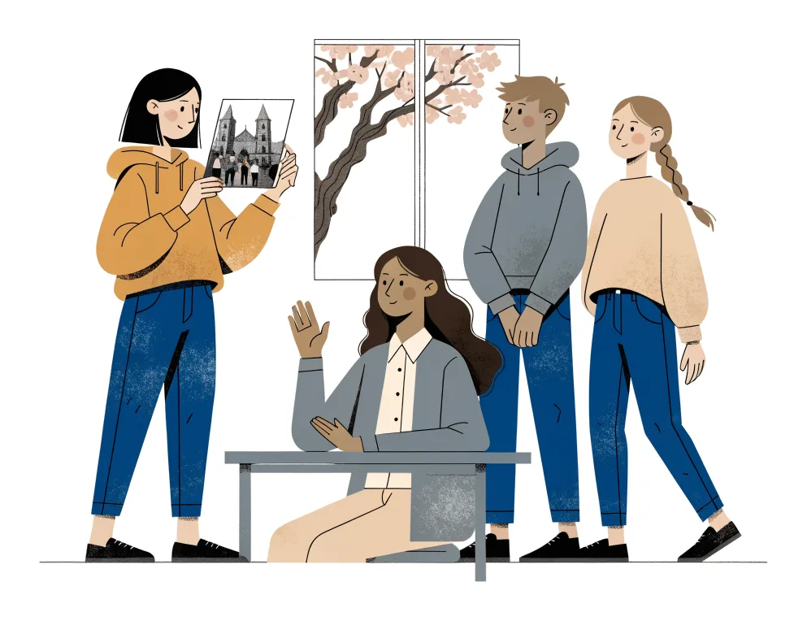
4월이에요. 2주 동안의 부활절 방학(Osterferien)이 끝나고 8b 친구들이 다시 만났어요. 방학에 무엇을 했는지, 왜 그랬는지 이야기해요.
눌러서 들어 보세요.
먼저 생각해 보세요.
Ich bin zu Hause geblieben, weil ich krank war. weil 뒤에서 동사 war는 어디에 있나요?
weil로 시작하는 문장에서는 동사가 맨 끝으로 가요.
문법 weil, denn, Perfekt 복습, und, aber, oder
이 과를 마치면 방학에 한 일을 이유와 함께 말하고, 한국과 독일의 학교를 비교할 수 있어요.
부활절 방학이 끝난 첫날 아침, 교실이에요.
들으면서 찾아보세요. Yuna의 방학에는 누가 왔나요?
첫 시간은 Frau Schneider의 수업이에요. Yuna가 한국 학교 이야기를 해요.
들으면서 찾아보세요. 한국에서는 새 학년이 언제 시작하나요?
두 대화를 듣고 답하세요.
Yuna의 방학에는 누가 왔나요?
Jun findet Köln langweilig.
Er findet Köln toll, weil es hier so viel Schokolade gibt.
Warum ist Elif zu Hause geblieben?
Wo war Lukas in den Osterferien?
한국에서는 새 학년이 언제 시작하나요?
In Korea tragen die Schüler in der Grundschule eine Uniform.
In der Grundschule nicht. 중학교부터 입어요.
Yuna는 독일 학교의 무엇이 마음에 드나요?
낱말 28개예요. 낱말이나 예문 앞의 단추를 누르면 소리가 나요. 명사는 der, die, das를 색으로 구분했어요.
die Osterferien (Pl.) 부활절 방학
In den Osterferien war ich in Köln.부활절 방학에 나는 쾰른에 있었어요.
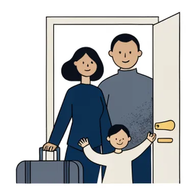
der Besuch, die Besuche 방문, 손님
Wir hatten Besuch aus Korea.한국에서 손님이 왔어요.
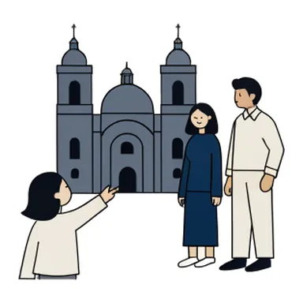
zeigen, hat gezeigt 보여 주다
Yuna hat ihrer Familie die Stadt gezeigt.Yuna는 가족에게 시내를 구경시켜 줬어요.
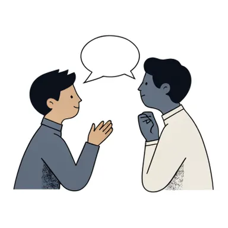
erzählen, hat erzählt 이야기하다
Jun hat von der Schule erzählt.Jun은 학교 이야기를 했어요.
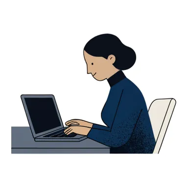
arbeiten, hat gearbeitet 일하다
Meine Eltern haben gearbeitet.부모님은 일하셨어요.
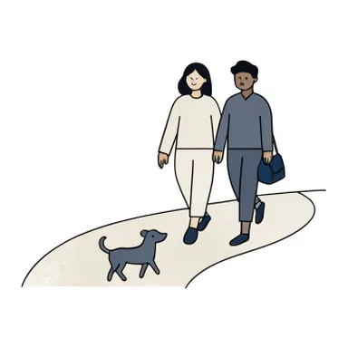
spazieren gehen, ist spazieren gegangen 산책하다
Wir sind am Strand spazieren gegangen.우리는 해변에서 산책했어요.
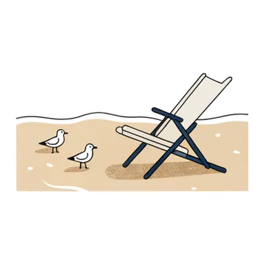
der Strand, die Strände 해변
Der Strand ist schön.해변이 아름다워요.
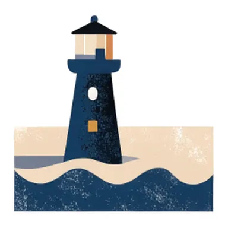
die Nordsee 북해
Lukas war an der Nordsee.Lukas는 북해에 있었어요.
bei ~의 집에, ~에서
Wir waren bei meinen Großeltern.우리는 할머니, 할아버지 댁에 있었어요.
warum 왜
Warum bist du zu Hause geblieben?왜 집에 있었어?
weil ~해서, 왜냐하면
Ich bin müde, weil ich wenig geschlafen habe.잠을 조금 자서 피곤해요.
denn 왜냐하면
Ich bleibe zu Hause, denn ich bin krank.나는 집에 있어요. 아프거든요.
der Grund, die Gründe 이유
Was ist der Grund?이유가 뭐예요?
fragen, hat gefragt 묻다
Jun hat viel gefragt.Jun은 질문을 많이 했어요.
wenig 조금, 적게
Ich habe wenig geschlafen.나는 잠을 조금 잤어요.
fast 거의
Es hat fast jeden Tag geregnet.거의 날마다 비가 왔어요.
oft 자주
Wir gehen oft ins Kino.우리는 자주 영화관에 가요.
oder 또는, 아니면
Fährst du mit dem Bus oder mit dem Rad?버스 타고 가, 아니면 자전거 타고 가?
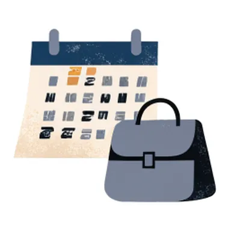
das Schuljahr, die Schuljahre 학년, 학년도
Das Schuljahr fängt im Sommer an.새 학년은 여름에 시작해요.
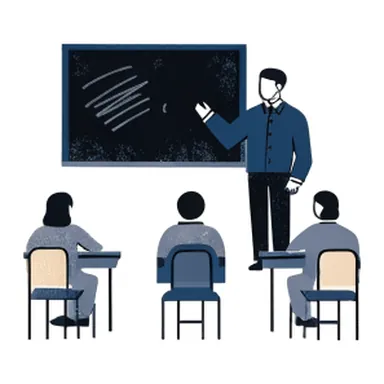
der Unterricht 수업
Der Unterricht fängt um acht an.수업은 여덟 시에 시작해요.
dauern, hat gedauert (시간이) 걸리다, 계속되다
Der Unterricht dauert bis vier Uhr.수업은 네 시까지 해요.
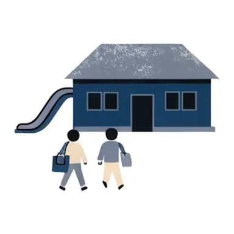
die Grundschule, die Grundschulen 초등학교
Jun geht in die Grundschule.Jun은 초등학교에 다녀요.
die Mittelschule, die Mittelschulen 중학교
In Korea gehe ich in die Mittelschule.한국에서 나는 중학교에 다녀요.
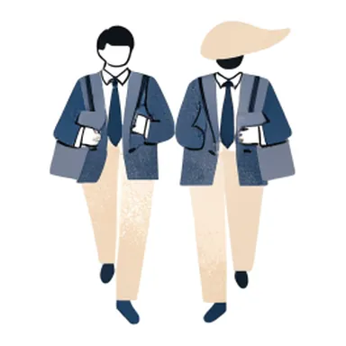
die Uniform, die Uniformen 교복, 제복
Viele Schüler tragen eine Uniform.많은 학생이 교복을 입어요.
tragen (du trägst, er trägt) 입다, 들다
Er trägt eine Jacke.그는 재킷을 입고 있어요.
zu Mittag essen 점심을 먹다
Wir essen in der Schule zu Mittag.우리는 학교에서 점심을 먹어요.
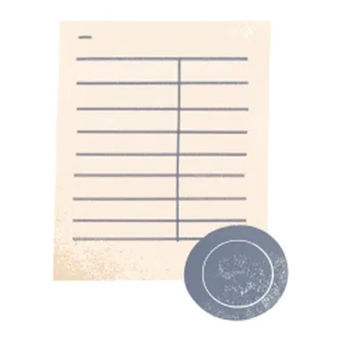
das Zeugnis, die Zeugnisse 성적표
Im Sommer bekommen wir das Zeugnis.여름에 우리는 성적표를 받아요.
die Note, die Noten 성적, 점수
Die Note Eins ist sehr gut.성적 1은 아주 좋은 거예요.
이 과의 낱말로 여덟 문제를 풀어요.
숫자가 작을수록 좋은 성적이에요. 줄을 누르면 소리가 나요.
예문을 보고 답해 보세요.
weil로 시작하는 문장에서 동사는 어디에 있나요?
규칙
이유는 weil로 말해요. weil 문장에서는 동사가 맨 끝으로 가고, weil 앞에 쉼표를 찍어요. Warum?으로 물으면 Weil …로 짧게 답할 수 있어요.
| 앞 문장 | weil | 가운데 | 동사 |
|---|---|---|---|
| Ich bleibe zu Hause, | weil | ich krank | bin. |
| Er kommt nicht, | weil | er keine Zeit | hat. |
| Wir sind müde, | weil | wir wenig geschlafen | haben. |
| Lukas bleibt hier, | weil | er lernen | muss. |
주의 Perfekt에서는 haben이나 sein이, 조동사가 있으면 조동사가 맨 끝에 와요. …, weil ich wenig geschlafen habe. …, weil er lernen muss.
예문을 보고 답해 보세요.
denn 뒤에서 동사 hat은 어디에 있나요?
규칙
und(그리고), aber(하지만), oder(또는), denn(왜냐하면)은 두 문장을 이어요. 이 말들 뒤에서는 문장 순서가 바뀌지 않아요. 동사가 평소처럼 둘째 자리에 와요. aber와 denn 앞에는 쉼표를 찍어요.
| weil: 동사가 맨 끝 | denn: 동사가 둘째 자리 |
|---|---|
| Ich bleibe zu Hause, weil ich krank bin. | Ich bleibe zu Hause, denn ich bin krank. |
| Er kommt nicht, weil er keine Zeit hat. | Er kommt nicht, denn er hat keine Zeit. |
| Wir fahren mit dem Bus, weil es regnet. | Wir fahren mit dem Bus, denn es regnet. |
주의 weil과 denn은 뜻이 같아요. Warum?에 짧게 답할 때는 Weil …만 써요. Denn …으로 답을 시작하지는 않아요.
예문을 보고 답해 보세요.
besucht, erzählt처럼 be-, er-로 시작하는 동사의 과거분사에는 무엇이 없나요?
규칙
지난 일은 haben이나 sein과 과거분사로 말해요. 움직이는 동사와 bleiben은 sein을, 나머지는 haben을 써요. be-, er-, ver-로 시작하는 동사는 과거분사에 ge-를 붙이지 않아요.
| 동사 | 과거분사 | 예문 |
|---|---|---|
| zeigen | hat gezeigt | Ich habe ihr die Stadt gezeigt. |
| arbeiten | hat gearbeitet | Sie hat am Samstag gearbeitet. |
| fragen | hat gefragt | Er hat viel gefragt. |
| besuchen | hat besucht | Sie haben mich besucht. |
| erzählen | hat erzählt | Er hat von Korea erzählt. |
| fliegen | ist geflogen | Sie sind nach Köln geflogen. |
| bleiben | ist geblieben | Wir sind zu Hause geblieben. |
주의 arbeiten처럼 줄기가 -t, -d로 끝나거나 regnen처럼 자음 + n으로 끝나면 -et를 붙여요. gearbeitet, geregnet.
Emma가 부활절 방학 이야기를 해요. 듣고 답하세요.
Meine Osterferien
Emma In den Osterferien bin ich in Köln geblieben, weil wir Besuch aus Korea hatten.
Emma Yunas Eltern und ihr Bruder Jun waren eine Woche bei uns.
Emma Am Montag haben wir den Dom gesehen. Jun hat hundert Fotos gemacht!
Emma Am Mittwoch sind wir nicht in den Zoo gegangen, denn es hat geregnet. Wir sind ins Schokoladenmuseum gegangen.
Emma Am Samstag hat mein Vater für alle gekocht. Yunas Mutter hat Kimchi gemacht. Es war sehr lecker!
Warum ist Emma in Köln geblieben?
Was hat Jun am Montag gemacht?
Am Mittwoch sind sie in den Zoo gegangen.
비가 와서 동물원 대신 초콜릿 박물관에 갔어요.
토요일에는 누가 모두를 위해 요리했나요?
듣고 이유를 고르세요.
Elif는 왜 안 오나요?
Ich komme heute nicht, weil ich krank bin.
Lukas는 왜 피곤한가요?
Ich bin müde, weil ich wenig geschlafen habe.
Emma는 왜 버스를 타나요?
Ich fahre heute mit dem Bus, denn es regnet.
Yuna는 왜 독일어를 배우나요?
Ich lerne Deutsch, weil ich in Köln wohne.
Yuna가 블로그에 쓴 글이에요. 읽고 답하세요.
Besuch aus Korea
Endlich! In den Osterferien hat mich meine Familie besucht. Meine Eltern und Jun sind am Samstag nach Köln geflogen.
Am Sonntag haben wir lange geschlafen, weil alle müde waren. Die Reise hat dreizehn Stunden gedauert!
Am Montag habe ich meiner Familie die Schule gezeigt. Meine Mutter findet die Schule schön, aber klein.
Jun hat gefragt: „Warum ist die Schule schon um eins aus?“ Er findet das toll, denn in Korea hat er bis vier Uhr Unterricht.
Am Freitag sind sie zurückgeflogen. Aber im Sommer fliege ich nach Korea. Dann sehe ich sie wieder!
Yunas Familie ist mit dem Zug nach Köln gekommen.
Sie sind nach Köln geflogen. 비행기를 타고 왔어요.
Warum haben am Sonntag alle lange geschlafen?
Wie findet Yunas Mutter die Schule?
Jun은 독일 학교의 무엇이 좋다고 하나요?
Im Sommer fliegt Yuna nach Korea.
동사의 자리를 보고 weil과 denn 가운데 알맞은 말을 고르세요.
Ich bleibe zu Hause, ich krank bin.
동사 bin이 맨 끝에 있으니 weil이에요.
Ich bleibe zu Hause, ich bin krank.
동사 bin이 둘째 자리에 있으니 denn이에요.
Er kommt nicht, er keine Zeit hat.
Wir fahren mit dem Bus, es regnet heute.
Lukas ist müde, er wenig geschlafen hat.
Ich lerne Deutsch, ich wohne in Köln.
und, aber, oder, denn 가운데 알맞은 말을 고르세요.
Ich habe gelesen ich habe Musik gehört.
나는 책을 읽고 음악을 들었어요.
Die Schule ist schön, sie ist klein.
학교는 예쁘지만 작아요.
Gehen wir ins Kino bleiben wir zu Hause?
영화관에 갈까, 아니면 집에 있을까?
Ich komme nicht mit, ich habe keine Zeit.
나는 같이 못 가. 시간이 없거든.
Jun findet Köln toll, er wohnt in Seoul.
Jun은 쾰른이 좋지만 서울에 살아요.
괄호 안의 동사를 과거분사로 바꿔 쓰세요.
Meine Eltern haben mich . (besuchen)
부모님이 나를 보러 오셨어요.
Jun hat viel von Korea . (erzählen)
Jun은 한국 이야기를 많이 했어요.
Ich habe meiner Familie die Stadt . (zeigen)
나는 가족에게 시내를 보여 줬어요.
Meine Mutter hat am Samstag . (arbeiten)
어머니는 토요일에 일하셨어요.
Wir sind eine Woche . (bleiben)
우리는 일주일 동안 있었어요.
Der Unterricht hat lange . (dauern)
수업이 오래 걸렸어요.
낱말을 순서대로 눌러 문장을 만드세요.
나는 아파서 집에 있어.
그는 시간이 없어서 안 와.
우리는 잠을 조금 자서 피곤해.
왜 집에 있었어?
낱말과 뜻을 짝지으세요.
듣고 그대로 써 보세요.
Wie waren die Osterferien? 부활절 방학 어땠어?
Ich bin zu Hause geblieben. 나는 집에 있었어.
Warum so lange? 왜 그렇게 오래 해?
Wie waren die Osterferien? 부활절 방학 어땠어?
Was hast du in den Ferien gemacht? 방학에 뭐 했어?
Ich war bei meinen Großeltern. 할머니, 할아버지 댁에 있었어.
Wir hatten Besuch. 손님이 왔어.
Warum bist du zu Hause geblieben? 왜 집에 있었어?
Weil ich krank war. 아파서.
…, denn es hat geregnet. 비가 왔거든.
In Korea fängt das Schuljahr im März an. 한국에서는 새 학년이 3월에 시작해.
Bei uns ist die Schule um eins aus. 우리는 학교가 한 시에 끝나.
Das finde ich gut. / Das finde ich nicht so gut. 그건 좋은 것 같아. / 그건 별로인 것 같아.
und 그리고
aber 하지만
oder 또는, 아니면
대화 A에서 역할을 하나 고르세요. 상대의 말은 음성으로 나오고, 내 차례에는 직접 말해요.
지난 방학에 있었던 곳과 그 이유, 한 일을 적으세요. 완성된 문장을 소리 내어 읽어 보세요.
In den Ferien war ich zu Hause, weil meine Eltern gearbeitet haben.
Ich habe viel gelesen.
Die Ferien waren schön!
Schule hier und dort
한국 학교와 독일 학교를 비교하는 글을 써 보세요. 다섯 문장쯤 써요.
In Korea fängt das Schuljahr im März an, aber in Deutschland fängt es im Sommer an. In Korea dauert der Unterricht oft bis vier Uhr. In Deutschland ist die Schule oft um eins aus. In Korea essen die Schüler in der Schule zu Mittag. Viele Schüler in Korea tragen eine Uniform, aber in Deutschland gibt es keine Uniform. Ich finde die Schule in Deutschland gut, weil ich am Nachmittag Zeit habe.
다 쓴 뒤에 확인해 보세요.
Ich kann von den Ferien erzählen.방학 이야기를 할 수 있어요.
Ich kann Gründe sagen.이유를 말할 수 있어요.
Ich kann die Schule in Korea und in Deutschland vergleichen.한국과 독일의 학교를 비교할 수 있어요.